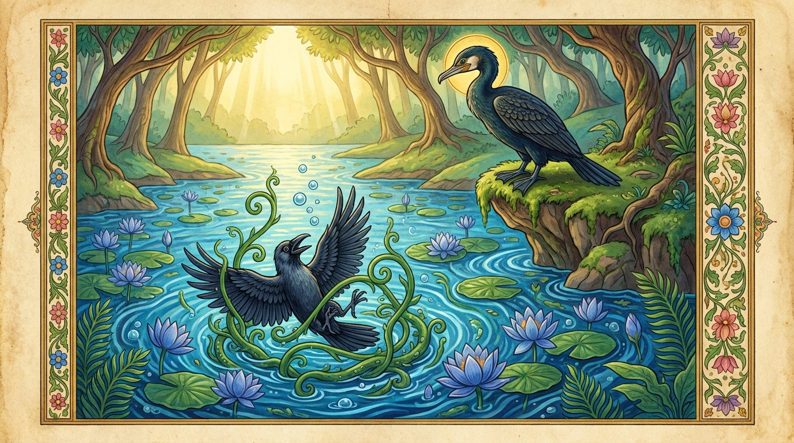

4. වීරක ජාතකය (204)
“අපි වීරක පස්සෙසී” යන මේ දේශනාව ශාස්තෘන් වහන්සේ ජේතවනාරාමයේ වැඩවාසය කරද්දී, බුදුරජාණන් වහන්සේගේ විලාසය අනුකරණය කිරීමක් (සුගතාලය) අරබයා වදාළ සේක. සැරියුත් තෙරුන් වහන්සේ දෙව්දත්ගේ පිරිස රැගෙන ආපසු පැමිණි කල්හි, බුදුරජාණන් වහන්සේ “ශාරිපුත්රයෙනි, දෙව්දත් තොප දැක කුමක් කළේද?” යි විමසූ සේක. “ස්වාමීනි! බුදුරජාණන් වහන්සේගේ ලීලාව (සුගතාලය) දැක්වීය” යි පැවසූ කල්හි, “ශාරිපුත්රයෙනි, දෙව්දත් මා අනුකරණය කරමින් විනාශයට පත් වූයේ දැන් පමණක් නොවේ. පෙරත් ඔහු මා අනුකරණය කොට විනාශයට පත් විය” යි වදාරා, තෙරුන් වහන්සේ විසින් අයැද සිටි බැවින් ඒ අතීත කථාව ගෙනහැර දැක්වූ සේක.
යටගිය දවස බරණැස් නුවර බ්රහ්මදත්ත රජු රාජ්යය කරන සමයේ, බෝධිසත්ත්වයන් වහන්සේ හිමාලය ප්රදේශයේ දියකාවකු වී ඉපිද එක් විලක් ඇසුරු කොට වාසය කළහ. උන්වහන්සේට ‘වීරක’ යන නම විය. එකල්හි කාසි රටේ සාගතයක් ඇති විය. මිනිසුන්ට කාක්කන්ට බත් දීමට හෝ යකුන් නාගයන් උදෙසා බලි පූජා පැවැත්වීමට හෝ නොහැකි විය. සාගතයෙන් පීඩිත වූ රටෙන් කාක්කෝ බොහෝ සෙයින් වනයට වැදුණහ. බරණැස විසූ ‘සවිට්ඨක’ නම් එක් කපුටෙක් තම කපුටු දෙන ද කැටුව වීරක නම් දියකාවා වසන තැනට ගොස්, ඒ විල ඇසුරු කොට එක් පසෙක වාසය කළේය. එක් දිනක් ඒ කපුටා ගොදුරු සොයන අතරතුර, වීරකයන් විලට බැස මසුන් කා ගොඩට අවුත් සිරුර වේලමින් සිටිනු දැක, “මේ දියකාවා නිසා බොහෝ මසුන් ලබා ගත හැකිය, එබැවින් මොහුට උපස්ථාන කරමි” යි සිතා උන්වහන්සේ වෙත එළඹියේය. “යහළුව, කවරේද?” යි ඇසූ කල්හි, “ස්වාමීනි, මම ඔබට උපස්ථාන කිරීමට කැමැත්තෙමි” යි කීය. වීරකයන් විසින් “යහපතැ” යි එය පිළිගත් තැන් පටන් හෙතෙම වීරකයන්ට උපස්ථාන කළේය. වීරකයන් ද එතැන් පටන් තමන්ට යැපෙන පමණට මසුන් කා ඉතිරි මසුන් ගොඩ දමා සවිට්ඨකට දෙයි. හෙතෙම තමන්ට යැපෙන පමණට කා ඉතිරිය තම කපුටු දෙනට දෙයි.
පසු කාලයකදී ඒ කපුටාට මෙවන් මානයක් උපන්නේය: “මේ දියකාවාත් කළු පාටය. මමත් කළු පාටය. ඇස්, හොට සහ පාදවලින් මොහුගේත් මගේත් කිසිදු වෙනසක් නැත. මෙතැන් පටන් මොහු විසින් අල්ලා දෙන මසුන්ගෙන් මට වැඩක් නැත. මමම මසුන් අල්ලා ගන්නෙමි.” හෙතෙම වීරක වෙත ගොස්, “යහළුව, මෙතැන් පටන් මමම විලට බැස මසුන් අල්ලා ගන්නෙමි” යි කීය. එවිට වීරකයන් “යහළුව! නුඹ දියට බැස මසුන් අල්ලන කුලයක උපන්නෙක් නොවේ, විනාශ නොවන්න” යි ඔහු වැළැක්වීය. එසේ වළක්වද්දීත් ඔහුගේ වචනය ගණන් නොගෙන විලට බැස දිය යටට පිවිසි හෙතෙම, දිය සෙවෙල් කඩාගෙන මතු වීමට උත්සාහ කළද ඊට නොහැකි විය. ඔහු දිය සෙවෙල් අතරෙහි සිර විය. (ජලයෙන් මතුපිටට) ඔහුගේ හොටයේ අග පමණක් පෙනෙන්නට තිබිණි. හුස්ම ගැනීමට නොහැකි වූ කපුටා ජලය තුළදීම මරණයට පත් විය. ඉක්බිති කපුටු දෙන තම සැමියා එනු නොදැක, සිදුවූ පුවත දැනගනු පිණිස වීරකයන් වෙත ගොස්, “ස්වාමීනි! සවිට්ඨක පෙනෙන්නට නැත. ඔහු කොහිද?” යි විමසමින් පළමු වන ගාථාව කීවාය.

“වීරකයිනි! මියුරු ලෙස හඬන, මොනර බෙල්ලක් බඳු පැහැ ඇති, සවිට්ඨක නම් වූ මගේ ස්වාමියා ඔබ දුටුවෙහිද?”
එහි අපි වීරක පස්සෙසි යනු “ස්වාමීනි වීරක! දුටුවෙහිද?” යන්නයි. මඤ්ජුභාණකං යනු “මිහිරි ලෙස හඬ නඟන” යන්නයි. ඇය රාගය නිසා “මගේ සැමියා මිහිරි හඬ ඇත්තෙකැ” යි සිතයි; එහෙයින් එසේ කීවාය. මයූරගීවසඞ්කාසං යනු “මොනරකුගේ ගෙලට සමාන වර්ණය ඇති” යන්නයි.
එය අසා වීරකයන්, “එසේය, නුඹේ ස්වාමියා ගිය තැන මම දනිමි” යි පවසා දෙවන ගාථාව වදාළේය.
“දියෙහිත් ගොඩබිමෙහිත් හැසිරෙන, නිතර අමු මසුන් ආහාරයට ගන්නා පක්ෂියා (දියකාවා) අනුකරණය කිරීමට ගිය සවිට්ඨක නම් කපුටා, දිය සෙවෙල්වල පැටලී මිය ගියේය.”
එහි උදකථලචරස්ස යනු ජලයෙහි ද ගොඩබිමෙහි ද හැසිරීමට සමත් යනුවෙන් තමා ගැන සඳහන් කරයි. පක්ඛිනො යනු පක්ෂියාගේ හෙවත් තමාගේ ය. තස්සානුකරං යනු ඔහු අනුකරණය කරමින් සිටියදී ය. සෙවාලෙ පලිගුණ්ඨිතො මතො යනු ජලයට බැස දිය සෙවෙල් කඩාගෙන මතු වීමට නොහැකි ව, දිය සෙවෙල්වලින් වෙළී ජලය තුළදීම මළේය. “බලන්න! අර ඔහුගේ හොට පෙනේ” යනුයි. එය අසා කපුටු දෙන වැළපී නැවත බරණැසටම ගියාය.
බුදුරජාණන් වහන්සේ මේ ධර්ම දේශනාව ගෙනහැර දක්වා ජාතක කථාව නිමවා වදාළ සේක. “එකල සවිට්ඨක වූයේ දැන් මේ දෙව්දත් ය. වීරක වූයේ මම ම වෙමි” යි වදාළ සේක.
සිව්වන වූ වීරක ජාතක වර්ණනාවයි.